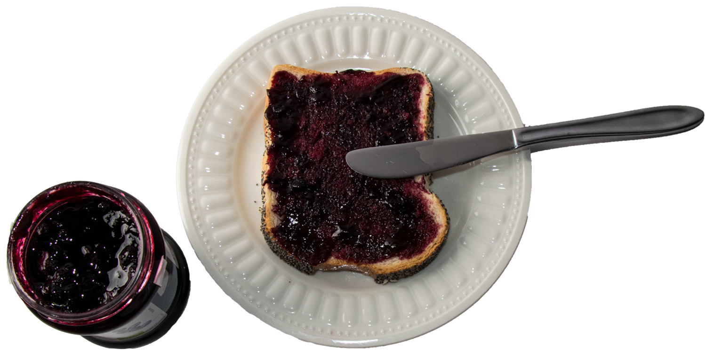
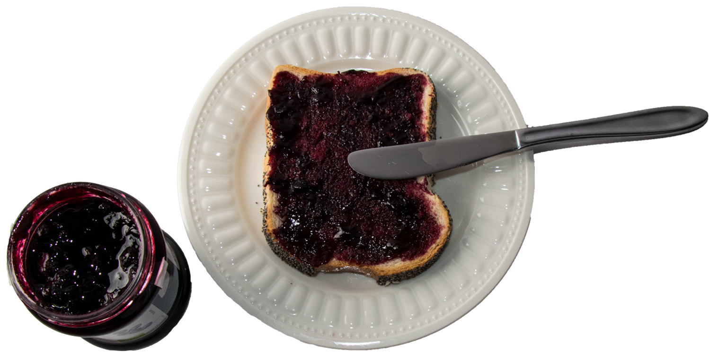
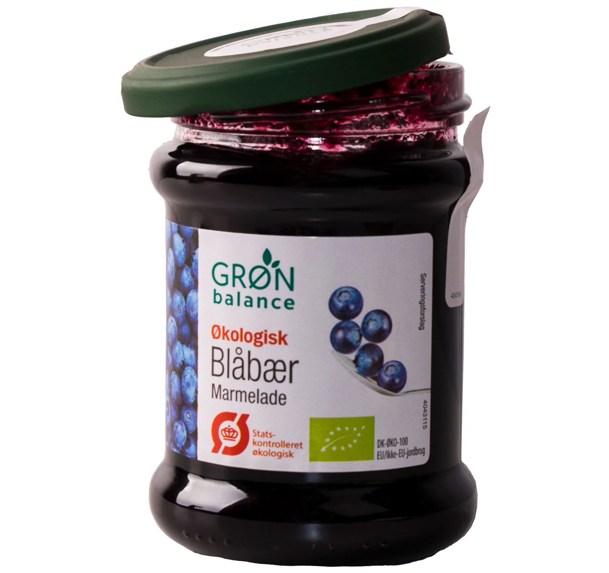
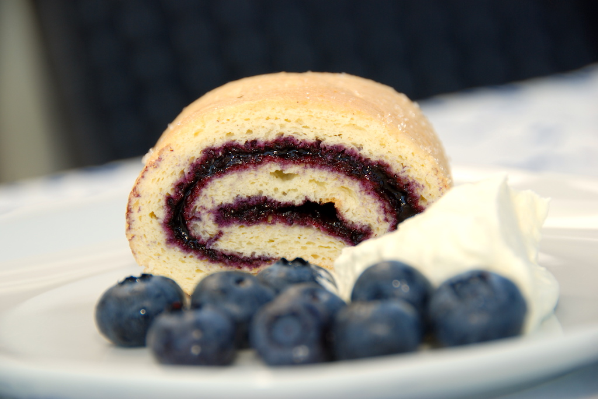
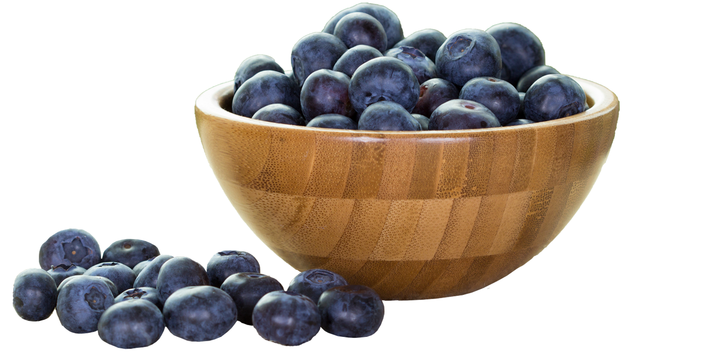
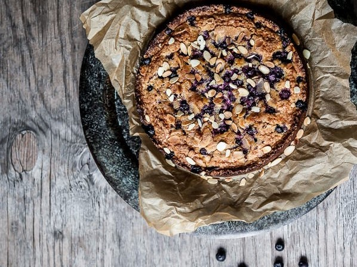

Om blåbærmarmelade

 

Grøn Balances blåbærmarmelade er en dansk økologisk marmelade som kun indeholder gode danske økologiske råvarer. Og er både statskontrolleret økologi samt EU økologimærket stemplet.
Grøn Balances marmelade skal opbevares ved stuetemperatur. Åbnet: 14 dage i køleskabet.
Marmeladen indeholder: 50% økologiske blåbær, 38% økologisk rørsukker, 11% vand, økologisk citronsaft, geleringsmiddel (E 440) & surhedsregulerende middel (E 333)
Fremstillet af 50g frugt pr. 100g
Næringsindhold pr. 100g:
Energi
Fedt
Heraf mættede fedtsyre
Kulhydrat
Heraf sukker arter
Protein
Salt
781KJ/184Kcal
< 0.5g
0 g
45g
43g
< 0.5g
0.05g
For mere information:
www.supergros.dk
www.facebook.com/groenbalance
Om GRØN balance
Består af en serie varer, som bruges allermest i hverdagen, alt fra fødevare til personligpleje. Grøn Balance gør meget op i økologi og miljøet, og derfor består alle deres varer af økologiske madvarer, miljø og allergivenlige pleje-, vaske – rengøringsprodukter, som også er stemplet med svanemærket.
Grøn Balance udvikler hele tiden nye produkter og giver via. deres hjemmeside mulighed for deres forbrugere at give forslag til nye produkter.
Grøn Balance - ”Ha’ en grøn dag”
Blåbær roulade
 6 pasteuriserede æggeblommer
2 teskefulde vaniljesukker
60g rørsukker
6 pasteuriserede æggehvider
100g god, økologisk hvedemel
200g økologisk blåbærmarmelade
+ lidt sukker til drysning på bagepapir
Bagetid: ca. 7 minutter ved 185 grader varmluft.
Fremgangsmåde
Kom æggeblommer, vaniljesukker og rørsukker i en skål, og pisk det luftigt med en elpisker.
I en anden skål pisker du æggehviderne helt stive. Test om æggehviderne er stive nok ved at vende skålen på hovedet.
Så lægger du elpiskeren væk, og find en dejskraber frem.
Bland hvedemel og bagepulver sammen, og rør det ind i de piskede æggeblommer. Vend så forsigtigt de piskede æggehvider i og rør dejen jævn og luftig.
Bred dejen ud på et stykke bagepapir på en bageplade, og bag kagen i 7 min ved 185 grader varmluft. Det VIGTIGT, at kagen IKKE bliver over bagt, da den så ikke er til at rulle sammen. Så tag rouladekagen ud når den er let gylden.! Drys lidt sukker ud på et andet stykke bagepapir, læg nu den bagte kageplade ned oven på denne. Så oversiden af den bagte kage lægger ned mod sukkeret. Tryk let til.
Fjern nu forsigtigt bagepapiret fra bunden af den bagte rouladekage. Smør et godt lag økologisk blåbærmarmelade ud på bunden, men ikke helt ud til kanterne. Tril rouladen forsigtigt sammen, og læg den med samlingen nederst.
Lad rouladen hvile lidt – evt. på køl. Serveres med let pisket flødeskum og friske blåbær.
Blåbærkage
250 blødt smør
250 g sukker
3 æg
150 g hvedemel
75 g mandelmel eller fint blendede mandler
(kan erstattes med revet marcipan)
¾ tsk. Bagepulver
200 g blåbær eller andre favoritbær
3 spsk. rørsukker (kan erstattes med alm. sukker)
25 g mandelflager til pynt
Fremgangsmåde
Rør smør og sukker hvidt – gerne i røremaskine.
Tilsæt herefter et æg ad gangen og sørg for at røre grundigt mellem hvert.
Bland hvedemel, mandelmel og bagepulver og vend forsigtigt i.
Kom dejen i en smurt kageform, hæld blåbær over og drys med rørsukker og mandelflager.
Bag ved 170° i cirka 50 minutter, eller indtil kagen er færdig.
Kagen er færdig, når du kan stikke en kødnål eller lignende i midten, og den kommer op ren.